Depósito Fechado
O processo de Faturamento de Depósito Fechado exige a configuração do processo de Transferencia entre filiais.
Faturamento em Depósito Fechado
Para acessar a tela de Faturamento de Depósito Fechado, basta acessar o menu:
Vendas C/R -> Faturamento em depósito fechado

Após seleção a tela BR One :: Faturamento em deposito fechado será apresentada.


A tela possui os seguintes campos de filtro:
Cliente: Apresentará todos os Parceiros de Negócios cadastrados como cliente no sistema.
Ponto de Entrega: Apresentrá os pontos de entrega do cadastrado do cliente, somente permitirá ser preenchido o campo, caso o campo cliente esteja com filtro.
Filial: Apresentará todas as Filiais ativas cadastradas no sistema para seleção.
Processo: Apresentará os processos que fazem parte do Faturamento de deposito fechado, sendo eles:
Pedido de Venda
NF de entrega futura
Esboço de NF de Saída
Esboço de NF de Faturamento
Pedido de Transferência
Data de entrega: Apresentará o calendário para realizar o filtro por Data De/Até.
Nº Documento: Apresentará o número dos documentos conforme selecionados no campo Processo para realizar o filtro De/Até.
N° do item: Apresentará os itens cadastrados para realizar filto De/Até.
A tela possui os seguintes campos na grid:
Selecionado: Campo do tipo checkbox utilizado para seleção da linha e processamento.
Nº do documento: Apresenta o número do documento selecionado previamente no campo processo do cabeçalho.
Código do item: Apresenta os códigos dos itens no documento selecionado previamente no campo processo do cabeçalho.
Descrição do Item: Apresenta a descrição dos itens no documento selecionado previamente no campo processo do cabeçalho.
Depósito: Apresenta o deposito dos itens no documento selecionado previamente no campo processo do cabeçalho.
Quantidade: Apresenta a quantidade dos itens no documento selecionado previamente no campo processo do cabeçalho. O valor do campo quantidade pode ser alterado.
Cliente: Apresenta o código do cliente no documento selecionado previamente no campo processo do cabeçalho ou no campo cliente.
Data de Entrega: Apresenta a data de entrega no documento selecionado previamente no campo processo do cabeçalho.
A tela possui os seguintes botões:
Filtrar: O botão aciona a consulta com base nos parametros escolhidos pelo usuário para apresentação em tela.
Cancelar: O botão tem ação de finalizar a tela.
Processar: O botão possui a ação de processar os documentos selecionados na grid.
Processo do Faturamento em Deposito Fechado
O processo de Faturamento em Deposito Fechado é utilizado para faturar um determinado produto na Filial A, porém este é produzido pela Filial B.
Para o início do processo devemos ter Pedidos de Vendas ou NF de Entrega Futuras inseridos no sistema.
Para filtrar os Pedido de Vendas ou NF de Entrega Futuras não há necessidade de preenchermos o campo Cliente, apenas se for necessário Pedidos de Vendas ou NF de Entragas Futuras de um cliente especifico.


Utilizando Pedido de Vendas no processo, selecionamos o Pedido de Venda e Item desejado, marcando o checkbox do campo selecionado.

Ao clicarmos no botão Processar, será aberto a tela BR One:: Seleção da filial de transferência para seleção da Filial será feita a transferencia.

Caso não selecionarmos nenhuma linha, a mensagem de alerta no rodapé será apresentada ‘Erro pois nenhuma linha foi selecionada’.
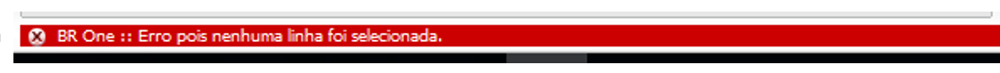{kind=link}
Caso selecionarmos a mesma filial do cabeçalho, neste exemplo SBO_BROne será apresentada a mensagem ‘A filial da transferência não pode ser nula ou igual a filial dos documentos selecionados’.
 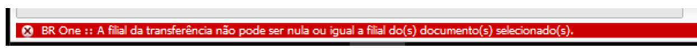
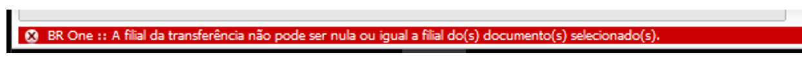
{kind=link}
Selecionando a filial desejada e clicando em OK, a tela do Pedido de Transferência de Estoque será aberto.
 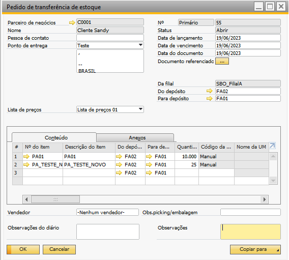
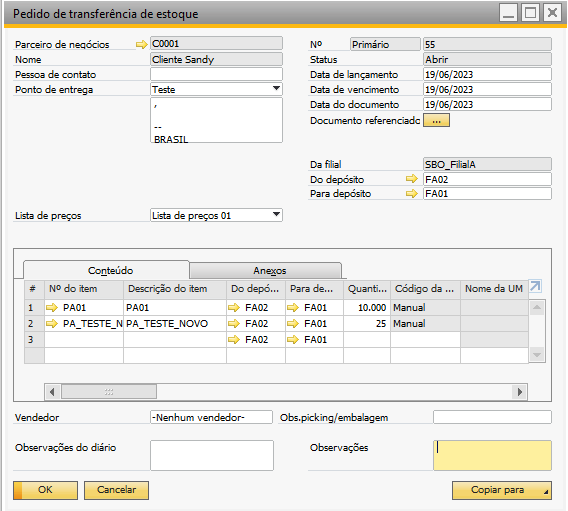
{kind=link}
Podemos utilizar o botão Copiar para e assim efetivarmos o Pedido de Transferencia de Estoque para uma Trasnferencia de Estoque.
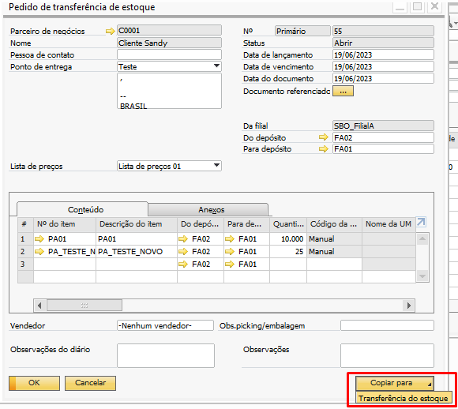{kind=link}
Podemos também utilizar a opção Pedido de Transferencia no cabeçalho da tela de Faturamento de Deposito Fechado.

Após selecionarmos as linhas dos pedidos desejados e selecionar o botão processar, os pedidos de transferencia de estoque serão transformados em Transferencia de Estoque e o Esboço de Nota Fiscal de Saída será apresentado em tela.

O esboço de Nota Fiscal de Saída pode ser adicionado já quando for aberto na tela ou localizado através do filtro na tela de Faturamento Deposito Fechado.
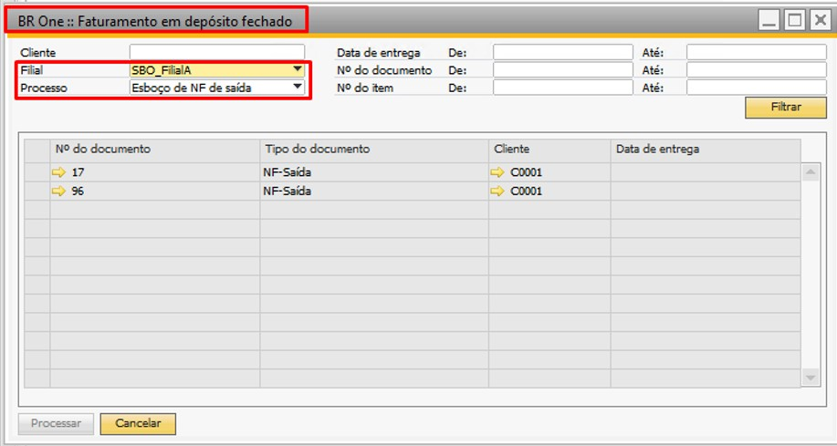 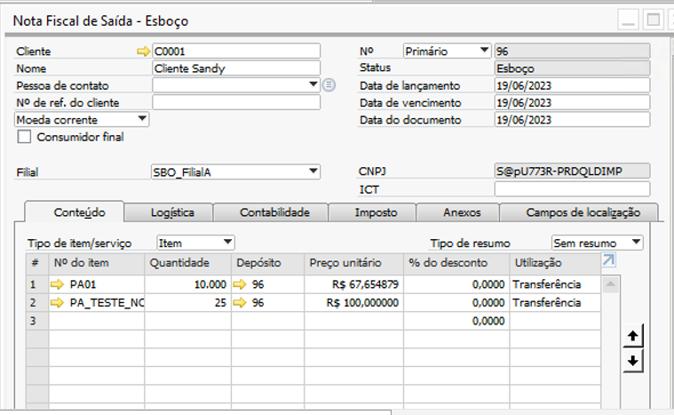{kind=link}
{kind=link}
Após adicionarmos o Esboço da Nota Fiscal de Saída o mesmo se tornará uma Nota Fiscal de Saída e será aberto automaticamente em tela o Esboço de Nota Fiscal de Entrada para a filial SBO_BROne.
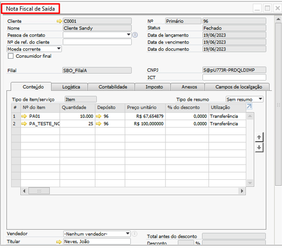 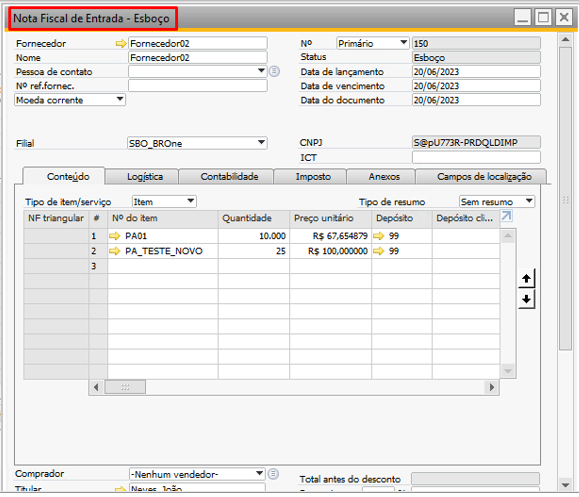{kind=link}
{kind=link}
Ao adicionarmos o Esboço de Nota Fiscal de Entrada o mesmo se tornará uma Nota Fiscal de Entrada e será aberto automaticamente um Esboço de Nota Fiscal de Saída para a filial SBO_BROne.
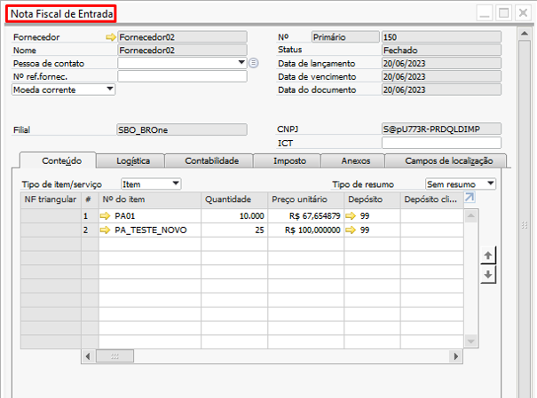 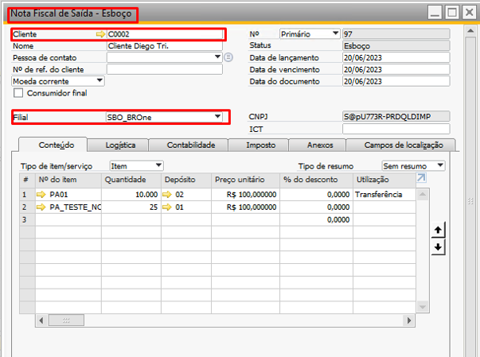{kind=link}
{kind=link}
Podemos localizar também este documento na tela de Faturamento em Deposito Fechado através do filtro de cabeçalho Esboço de NF de Faturamento.
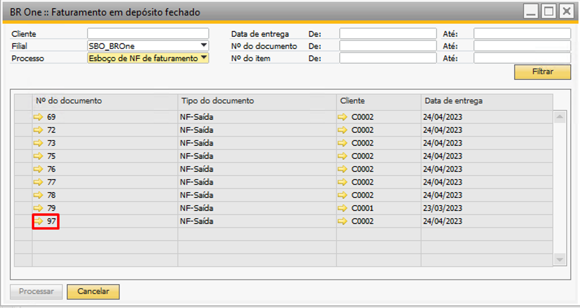 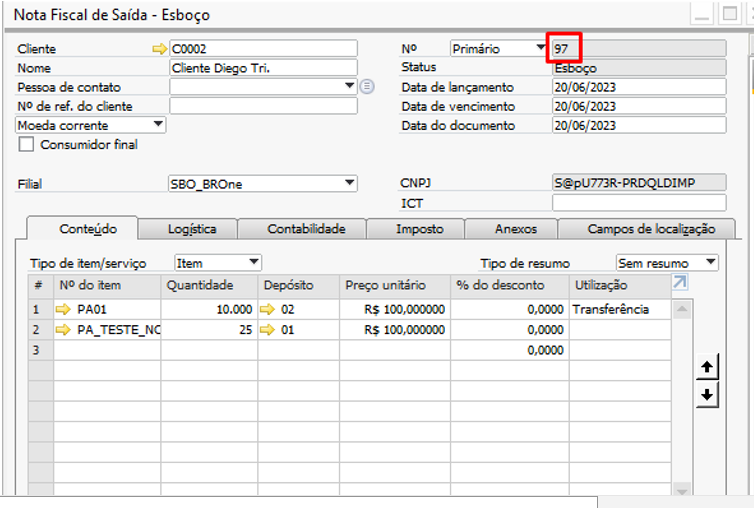{kind=link}
{kind=link}
Ao adicionarmos o Esboço da Nota Fiscal de Saída o mesmo se tronará uma Nota Fiscal de Saída para a filial SBO_BROne finalizando assim o processo de Faturamento em Deposito Fechado.